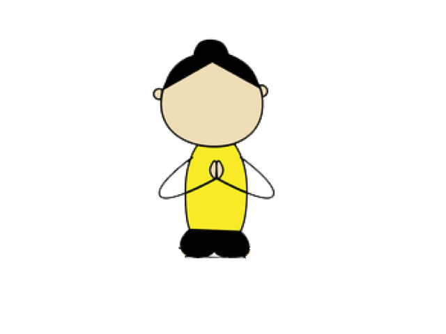

Cuentos para hacer Yoga


Marcos es un amigo mío. Es un niño que vive en una casa con patio, y que tiene una vida llena de aventuras cotidianas. Marcos tiene un súper poder, sabe que dentro de sí mismo, tiene una energía capaz de resolver cualquier situación, la energía del YOGA.


La Estrellita
Una noche cualquiera, Marcos estaba mezclando un colacao en su habitación, cuando de repente, oye en el patio de su casa un fuerte ruido. La verdad es que le dio un poco de miedo, porque fue un ruido extraño, pero él que es muy valiente, respiró profundo, bajo las escaleras con cuidado y abrió la puerta del patio. No podía creer lo que estaba viendo, era algo maravilloso, único, ¡nunca había viso algo parecido! Una estrellita bebe estaba en el medio de su patio, ¡su luz era maravillosa!

La pequeña estaba llorando asustada, y con una voz bajita le contó a Marcos que se había caído de los brazos de su mamá Estrella. Marcos tomó a la estrellita entre sus manos, y la puso en su corazón unos momentos, él sabe que el lugar donde mejor se siente uno, es reposando en el corazón. Luego de unos segundos, la estrellita se sintió mucho mejor. Entonces entre los dos empezaron a buscar la manera para que la pequeña vuelva al cielo con su mamá Estrella.
Marcos sabe que con la energía del Yoga se pueden solucionar todo tipo de problemas, entonces le propuso a la estrellita hacer yoga, para que con esa energía, puedan dar con la solución. Empezaron haciendo la postura de la roca, pensaron que si la estrellita se subía a una roca, podrían llegar al cielo. Marcos se sentó sobre sus talones con su espalda recta y puso suavemente sus manos en el regazo. Marcos pudo ver la maravillosa luz de la estrellita subir, pero... cayó nuevamente al patio. Falta un poco más de energía del yoga.
Entonces a Marcos se le ocurrió hacer la postura de molino para crear viento que elevara a la pequeña al cielo. Se paró con las piernas separadas, extendió los brazos en cruz y con una mano toco el suelo mientras la otra tocaba el cielo, luego cambió de lado, lo hizo tres veces para cada lado. Y, ¿sabes qué? ¡Generó un montón de viento! Vio la luz de la estrellita subir y subir, pero cuando estaba casi por llegar, se quedó sin viento y volvió a caer al patio de Marcos. La pequeña echó a llorar, extrañaba mucho a su mamá.

Entonces Marcos, se sentó en el suelo en postura de loto, la tomó entre sus manos y la llevó a su corazón. Se quedó unos momentos contemplando la luz tan maravillosa de la estrellita brillando en su pecho. Y entonces encontró la solución. ¡Había que llamar a la Mamá Estrella! Se concentró mucho pensando en La Estrella. De pronto todo el cielo se llenó de luz, es el mismo color que la luz de la estrellita. ¡Su Mamá bajaba del cielo a buscarla!

Al ver a su hijita llorar, la tomó entre sus manos y la llevó a su corazón diciéndole que ella nunca la había abandonado, puesto que comparten la misma luz. Antes de marcharse en agradecimiento le dejaron a Marcos la luz de la estrellita brillando en el pecho. Una luz que lo acompaña por siempre.
La Felicidad Perdida
Una tarde, Marcos volvió del cole a su casa y al entrar, notó algo muy extraño. Todo era triste, la cara de su mamá, de su papá, las plantas, las frutas y hasta el gato estaban tristes. Se había perdido la felicidad en su casa. Marcos sabía que era un problema para solucionar con la energía del yoga.

Pensó que tal vez la felicidad la había robado una ranita que andaba saltando por su patio, entonces hizo la postura de la rana, se puso de cuclillas y saltó por todo el patio, pero ahí la felicidad no estaba. Se le ocurrió que tal vez la felicidad la tenía la Luna, que la noche anterior apareció en el cielo como una sonrisa. Entonces se puso de pie con las piernas juntas, junto las palmas de sus manos con los brazos extendidos encima de su cabeza e inclino su torso hacia un lado y el otro.

Busco la felicidad en la media luna, pero no la encontró. Marcos se estaba desanimando, entonces se sentó en loto un momento para sentir la luz que le había regalado la estrellita, eso siempre lo hacía sentir mejor. Y cuando estaba viendo en su pecho esa maravillosa luz, se dio cuenta que ahí estaba la felicidad, ¡Adentro suyo!
Llamó a su mamá y papá, al gato y se sentaron en ronda. Cada uno se concentró en su corazón y en seguida encontraron la felicidad, que se extendió por toda la casa.

El Pájaro del ala rota
Una noche Marcos estaba terminando su colacao cuando escuchó un ruido muy extraño en su patio. Bajó con valentía las escaleras y al abrir la puerta, vió un pájaro con el ala rota. Se acercó y notó que el pobre no podía volar con el ala así. Entonces supo que la solución era la energía del yoga.
Primero tomó al pájaro entre sus manos y lo llevo a su corazón para que se sintiera mejor y no le doliera tanto su ala lastimada. Luego se le ocurrió ir a buscar agua sanadora de una cascada mágica. Hizo la postura de la cascada. De pie, juntando las piernas y las palmas de las manos con los brazos extendidos por encima de su cabeza, inclinó su torso para atrás llenando su tripita de aire y repitiendo su palabra mágica. Consiguió un poco de agua sanadora con la que acarició el ala rota, y al instante se curó. Pero el pájaro ahora tenía miedo de volar, no quería volver a lastimarse.
Marcos pensó que si subía a la montaña más alta y le mostraba al pájaro el hermoso cielo, eso lo animaría a volar. Se puso de pie con las piernas juntas, las palmas de las manos hacia el frente y los brazos un poco separados del cuerpo. Cerró sus ojos contemplando ese maravilloso cielo, lleno su tripita de aire fresco de montaña. Pero el pájaro todavía tenía miedo.
Entonces Marcos pensó que tal vez si volaba junto al pájaro, le daría la confianza necesaria para volver a tomar vuelo. Se puso de pie con los brazos extendidos un poco hacia atrás y se paró en las puntillas de sus pies. Subía y bajaba de las puntillas al suelo, cuando de pronto salió volando y vio que el pájaro lo seguía. Qué felicidad! El ala estaba curada y el pájaro volvió a volar!

La Flauta
Marcos está aprendiendo en la cole a tocar la flauta. Y todos los días practica en su casa. Una tarde quiso practicar como siempre, pero por mucho que soplase, no sonaba ni un poquito. Pensó que era muy raro, porque el día anterior sonaba muy bien. Se fijó si habría algo adentro que impidiera que el sonido saliera, pero no había nada. Marcos sospechaba que está era una situación a resolver con la energía del yoga.
¿Será que a la flauta se le olvidó cómo sonar? Se preguntó , entonces pensó en subirla a un nido de pájaros cantores, para que recordara lo bonita que es la música. Marcos se puso de pie como un árbol y subió un pie hasta el tobillo contrario, estiró los brazos por encima de la cabeza, lleno su tripita de aire y de pronto escuchó el canto de mil pájaros, ¡era una música maravillosa!

Marcos soplo la flauta y un hilito de música salía por ella, ¡Estaba funcionando! Pero todavía faltaba un poquito más de fuerza, entonces pensó que nadie tiene más fuerza que un guerrero, tal vez si conseguía esa fuerza, la flauta volvería a sonar. Marcos se puso de pie con las piernas abiertas, giro un pie 45 grados y el otro a 90, abrió los brazos en cruz con la palma de las manos hacia el suelo.
Flexionó la rodilla del pie que está a 45 grados hasta que quedó sobre el tobillo, sus ojos miraban el dedo mayor de la mano. Lleno su tripita de aire y fue sintiendo un montón de fuerza que le llenaba el cuerpo. Y esta vez al soplar la flauta sonaba súper fuerte, pero no salía música si no ruido, entonces Marcos fue a buscar la música en su corazón, se sentó y concentró en su pecho, y al soplar la flauta, sonó la melodía más hermosa del mundo.
La Casa de hielo
Una tarde al volver del colegio, Marcos sintió mucho frío al entrar en su casa. Y no entendía por qué, ya que era pleno verano. Entonces empezó a llamar a su mamá, pero nadie respondía. Y cuando miró bien su casa, se dio cuenta que el suelo parecía una pista de hielo, las plantas estaban congeladas, el gato parecía una estatua de hielo.

Marcos empezó a sentir que El frío le subía a el por los pies también, entonces se dio cuenta que tenía que resolver esa fría situación. Pensó en que la energía del yoga era una excelente solución, se le ocurrió que la postura de la cascada podía ayudar si el agua era calentita. Se paro con los pies juntos, juntó las palmas de las manos con los brazos extendidos sobre la cabeza e inclinó el tronco hacia atrás.
El agua de la cascada debía ser muy cálida, porque enseguida el hielo comenzó a derretirse, el gato podía mover los ojos y un poquito el rabo. Hacía falta más energía. Pensó que si soplaba aire caliente con la trompa de un elefante, terminaría de derretir el hielo.
Hizo la postura del elefante con los pies juntos y las manos en la cintura, sus brazos parecían las enormes orejas de un elefante. Y poco a poco fue avanzando por la casa elevando una pierna recta y luego la otra, como si fuera la trompa. Muy concentrado en su palabra mágica y en soplar aire caliente fue derritiendo todo el hielo. La casa Había quedado llena de charquitos, así que Marcos decidió volverse ranita y saltar en ellos para celebrar.
La Bicicleta
Marcos llegó un día del colegio y fue corriendo al patio para buscar su bicicleta, tenia muchas ganas de ir al parque a pasear con sus amigos, pero cuando se subió en ella, se dio cuenta que las ruedas estaban desinfladas. -No hay ningún problema- pensó Marcos, la voy a inflar con el bombín. Pero por más que la inflaba e inflaba, las ruedas en seguida se vaciaban.
Marcos estuvo intentando durante un largo rato, incluso se fijó que las ruedas no estuvieran pinchadas, pero no lo estaban. Era muy extraño todo. Luego de observar a su bicicleta, se dio cuenta que estaba un poco diferente. Estaba como cansada. Volvió a inflar sus ruedas y se dio cuenta que la bicicleta soplaba el aire apropósito!
Entonces decidió hablar con ella para ver cuál era el problema. Y resulta que el problema era muy simple, la bicicleta estaba cansada, le faltaba energía. Por lo que a Marcos se le ocurrió que la energía del yoga seguro haría que la bicicleta recupere sus fuerzas, y nadie más fuerte que un guerrero. Marcos se puso de pie con las piernas abiertas, giro un pie 45 grados y el otro a 90, abrió los brazos en cruz con la palma de las manos hacia el suelo.
Flexionó la rodilla del pie que está a 45 grados hasta que quedó sobre el tobillo, sus ojos miraban el dedo mayor de la mano. Lleno su tripita de aire y pensó que quería ir al parque a pasear con sus amigos, y esas ganas hicieron que las ruedas se iniciarán un poco! Aunque no era suficiente. Pensó que quería que la bicicleta fuera veloz como un pájaro, entonces estando con lo pies juntos empezó a aletear con sus brazos imitando el vuelo de los pájaros, las ruedas tenían cada vez más aire!
Marcos pensó que sería bueno ir a algún lugar donde a la bicicleta le gustase ir. Entonces se sentó sobre ella, y dejó que lo llevase, ella lo llevo a recorrer ciudades mágicas! Sin duda fue el mejor paseo en bicicleta que tuvo Marcos.
Los colores de la Casa
Una tarde Marcos llegó del cole y al entrar a su casa se dio cuenta que las plantas no eran verdes, si no grises. Miró las frutas y vio que las manzanas estaban grises, los plátanos también. Enseguida entendió que su casa había perdido los colores. Hasta su gato que es de color miel estaba gris. A Marcos los problemas no le asustan, para el son situaciones a resolver. Y el cuenta con un gran poder para hacerlo, ¡la energía del yoga!
Marcos se acordó del amarillo de una boa que había visto en una peli. Había quedado enamorado con la piel de esa serpiente. Entonces se le ocurrió hacer la postura de la cobra para recuperar el amarillo. Se tumbó boca abajo en el suelo, apoyo las palmas de las manos junto a su cuerpo a la altura de la mitad de su pecho, lleno su tripita de aire y levantó el torso. Fue mágico! Pudo sentir el color amarillo! Súper feliz pensó en recuperar el color rojo.
Nada más rojo que mi corazón, pensó. Y se sentó tranquilo para concentrarse en su pecho, respiró profundo y ¡Zas! Sintió el color rojo. Solo le faltaba el color azul para poder mezclarlos y recuperar todos los colores. Pensó en el azul del mar. Entonces hizo la postura del bote para ir en busca del último color. Se sentó en el suelo con las piernas estiradas hacia enfrente.

Levantó las piernas del suelo y estiró los brazos haciendo que las palmas de las manos se miren. Tuvo que hacer mucho equilibrio, como un bote en el mar, y enseguida sintió el color azul. Ahora que tenía los tres colores primarios, fue por toda la casa soplando colores, las manzanas rojas y verdes, el gato color miel, las plantas verdes, ¡qué hermosa y colorida era su casa!
La avioneta y los chocolates
Una noche mientras Marcos se bebía su colacao, oyó en el patio de su casa un fuerte ruido. Decidió valientemente ir a ver que había sucedido, y al abrir la puerta no pudo creer con lo que se encontró, había una avioneta a la que se le había roto el motor y había caído en su patio. Una avioneta que iba a una fábrica de chocolate a dejar bombones.

Marcos tenía ganas de que la avioneta se quedase en su patio y poder tener bombones por siempre!! Pero se dio cuenta que la avioneta estaba triste por no poder cumplir con su propósito de llegar a la fábrica, entonces Marcos decidió ayudarla. Al parecer el motor estaba roto, pero ningún mecánico de avionetas sabía cómo repararlo. A Marcos se le ocurrió probar con la energía del yoga, que es lo que siempre le ha solucionado todos los problemas.
Marcos se puso al lado de la avioneta e hizo la postura del avión con mucho equilibrio, abrió sus brazos en cruz y levantó un pie del suelo simulando un vuelo. La avioneta se sintió un poco mejor, pero todavía no estaba lo suficientemente bien para llegar a la fábrica de chocolate. Entonces Marcos le preguntó que era lo que más le gustaba y ella dijo que los perros.

Sin dudarlo Marcos hizo la postura del perro boca abajo, se acostó en el suelo boca abajo con sus manos a la altura del pecho, apoyó los deditos del pie y empujando con sus manos el suelo, hizo la postura del perro y la avioneta comenzó a reír, y Marcos a ladrar! Fue tanto lo que se rieron que el motor comenzó a funcionar.
La avioneta se sentía cansada luego de un rato, por lo que Marcos le enseñó una postura para descansar antes de emprender vuelo. La postura del niño, Marcos se puso de rodillas y llevo el culete a los talones, apoyando la frente en el suelo y relajando los brazos al lado de sus pies. Luego de unos minutos respirando profundo e la postura del niño, pudo ver cómo la avioneta continuó su viaje a la fábrica de chocolates, dejándole a Marcos en agradecimiento el bombón más rico del mundo.
El viaje
Una mañana al despertarse Marcos supo que iba a emprender un viaje hacia un lugar desconocido. Un sitio al que no había ido nunca, pero donde dice la gente que si pones un sueño en el suelo, crece un árbol. Y Marcos quería comer de los frutos de su sueño. Entonces fue a buscar las maletas.

Pero no las encontraba por ninguna parte, parecía como si las maletas se estuvieran escondiendo de el. Marcos las buscaba y buscaba, pero no había caso. No aparecían. Entonces pensó que tal vez podía hacer que las maletas vinieran a él por si solas. Pensó que si les contaba todo lo bueno del viaje, las maletas querrían emprenderlo.

Les contó que iban a ir a un sitio con maravillosos árboles, y mientras hacia la postura del árbol. Apoyó un pie sobre el tobillo contrario y juntó las palmas de las manos sobre su cabeza, haciendo mucho equilibrio. Llenó su tripita de aire y empezó a escuchar las rueditas de las maletas.
Entonces siguió contando que allí hay hermosos molinos de viento, y separó sus piernas el ancho de caderas, extendió sus brazos en cruz y comenzó a balancearse de un pie hacia el otro imitando el movimiento del molino. Y el sonido de las rueditas se hacia más fuerte, ¡las maletas se estaban acercando!
Les dijo que en ese lugar la Luna brilla como en ninguno, y haciendo la postura de la media luna, con los pies juntos y las palmas de las manos juntas por encima de la cabeza balanceaba su tronco hacia un lado y otro. Las maletas llegaron al lado de Marcos, que se encargó de guardar sus juguetes favoritos en ellas. Y ahora sí, estaba todo listo para su viaje. Un nuevo lugar lleno de maravillas lo esperaba a él y a toda la energía del yoga.
Posturas
Roca
Siéntate sobre tus talones. Mantén la columna recta. Apoya las manos sobre las rodillas. Respira largo y profundo.
Guerrero
Inicia en una posición de pie. Separa tus piernas el largo de una de ellas. Rota un pie a 45 grados y el otro a 90. Extiende los brazos paralelos al suelo. Flexiones la rodilla del pie a 45 grados hasta que quede sobre el tobillo. Tus ojos miran el dedo medio de la mano. Mantente unas reparaciones y cambia de lado.

Bote
Siéntate con las piernas estiradas hacia el frente. Levanta las piernas y los brazos manteniendo el equilibrio y poniendo fuerte el abdomen. Las palmas se miran.

Perro Boca Abajo
Colocare en cuatro apoyos, muñecas a la altura de los hombros, rodillas a la altura de las caderas. Inhala y empujando suelo con las manos estirando las piernas. Mírate el ombligo.

Cobra
Acuéstate boca abajo, las manos bajo los hombros. Eleva el pecho. Inclínate suavemente hacia atrás y endereza los brazos. Respira lento y profundo.

Cascada
Inicia en posición de pie. Los pies paralelos entre sí, abiertos el ancho de caderas. Estira los brazos por encima de la cabeza. Estira la coronilla hacia el cielo e inclínate suavemente hacia atrás inhalando.
Loto
Siéntate como un yogur, la espalda recta. Junta el dedo índice y el pulgar y extiende los otros tres dedos. Apoya las manos sobre las rodillas. Respira lento y profundo.

Molino
Inicia en una posición de pie. Separa los pies un poco más que el ancho de tus caderas. Extiende los brazos en cruz, las palmas hacia abajo. Inhala e inclínate hacia la derecha. Exhala y sube. Inhala e inclínate hacia la izquierda.

Montaña
Inicia en una posición de pie. Levanta los dedos de los pies y ábrelos, luego apoyarlos sujetándose del suelo. Espalda recta. La coronilla hacia el cielo. Siente la fuerza de la montaña

Bebe
Siéntate sobre tus talones en la postura de la Roca, desciende y lleva la frente a la tierra. Estira tus brazos hacia adelante o mantenemos al costado del cuerpo. Inhala y exhala profundo escuchando el latido de tu corazón.

Rana
Siéntate de cuclillas, con los talones juntos sin tocar el suelo. Coloca la punta de los dedos de las manos en el suelo, entre las rodillas. Mira hacia el frente. Inhala y eleva tus caderas, estirando las rodillas sin despegar los dedos de las manos del suelo. Exhala y baja.

Avión
Parado con los pies juntos estira una pierna hacia atrás y los brazos hacia adelante. Respira profundamente manteniendo el equilibrio. Cambia de pierna.

Arbol
Inicia en una posición de pie. Sube el talón derecho a la ingle, estira los brazos tocando las orejas, con las palmas juntas. Respiración lento y profundo repite cambiando de pierna.

Pájaro
En la posición de montaña ponte de pinturas de pie llevando los brazos hacia atrás como si fueran alas. Sube y baja repetidas veces. Inhala al subir, exhala al bajar.

Luna
Inicia en posición de pie, con los pies juntos y los brazos juntos, en la postura de Montaña. Eleva los brazos abrazando las orejas. Dobla tu torso hacia un lado y hacia el otro. Respira profundamente.
Elefante
Párate con las manos en la cintura y eleva una pierna manteniendo la espalda recta. Respira profundamente alternando de pierna.